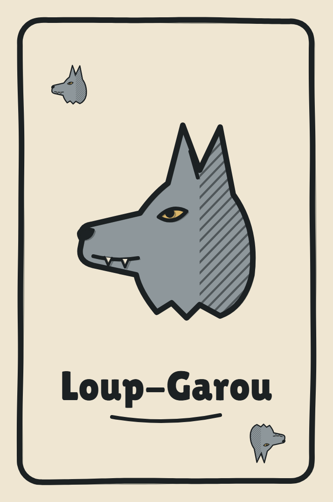
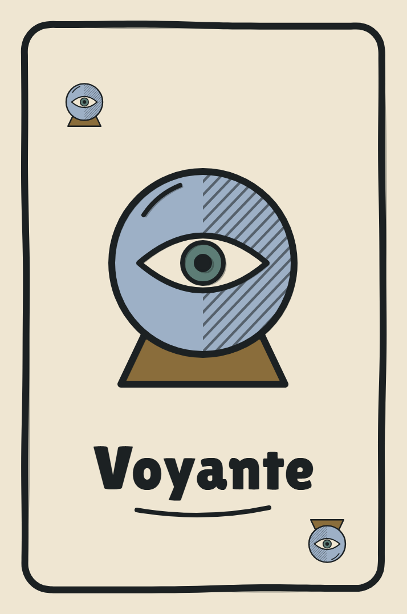
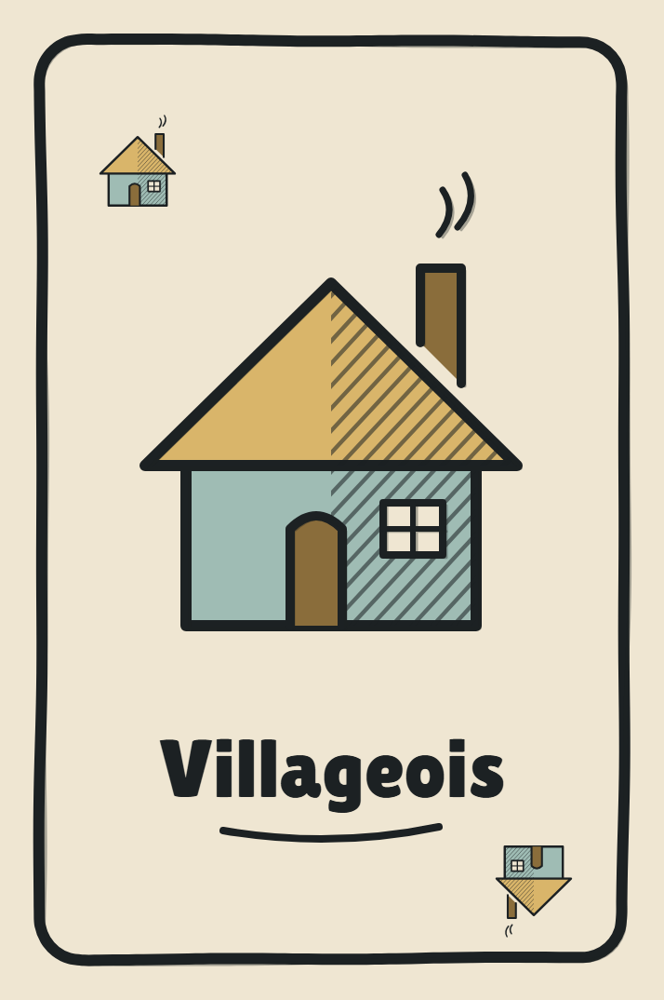

Nuit · Les loups choisissent
0:32
E
Désigner

1
Loup-Garou
avec Ana
Regarde un joueur et appuie sur
E
pour le désigner
Jour · Le village vote
0:41
E
Voter
2
1
0

Voyante
Ben est Villageois
Ana vote contre Zix
Loup-Garou
6/12
2 1

3
Zix
Ana
Ben
Lou
Max
Inès
…
…
R
←
→
durée du débat
Espace
quitter
E
Sonner la cloche
4 joueurs minimum · tout le monde prêt, la cloche lance la partie